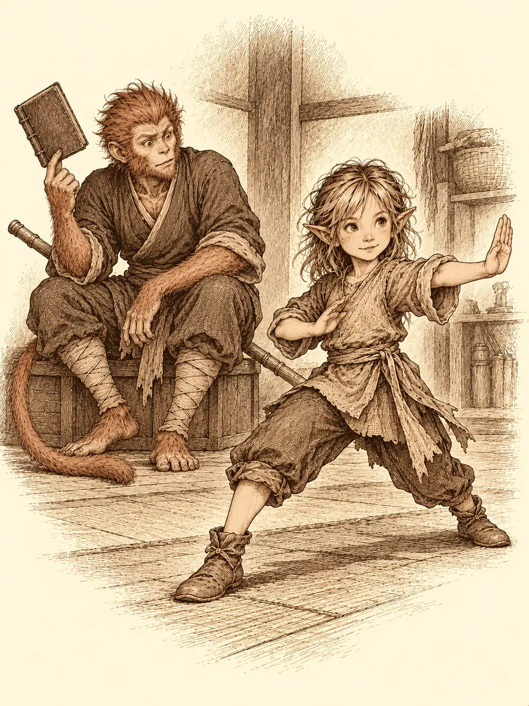

Capítulo 35
Un robo en la casa del noble
Libro III · La boda del shogun
"Es de todos", repetía Erk. "Aunque a ti te dé siempre lo mismo".
Shizuka abrazaba la bolsa de la feria contra el pecho y negaba con la cabeza. Habían pasado dos o tres días desde los juegos y la discusión se repetía cada mañana. A los pies de Erk dormitaba Koi, enroscado sobre sí mismo como una brasa con orejas. Las noticias del templo eran mejores: su madre seguía sedada, porque nadie quería que un yokai de fuego despertara de golpe en mitad del pueblo, pero estaba más estable.
Aquella mañana había llegado por fin carta de Chami, la costurera de Sho, en un sobre lleno de lazos y corazones. Durante tres o cuatro páginas le contaba todos los chismes de la capital, quién se había casado con quién y quién había dejado a quién, sin responder a nada. Al final, en una posdata, venía lo único que importaba: que fuera cuando quisiera, le prepararían un desfile. Erk abrió los ojos tanto como podía abrirlos una lechuza.
Sun Gukon leía en un rincón un libro tan viejo que las tapas se le deshacían entre los dedos. Se lo había dado un monje errante que pasó por su templo, y hablaba del Rey Mono. Avanzaba despacio, porque la letra era antigua, y cada pocas páginas levantaba la cabeza con la cara de quien se reconoce en un espejo.
"Aquí dice que puedo volar sobre las nubes", le contó a Maroxi. "Vale que yo salto mucho, pero eso es una exageración. Bueno. Si la gente cree que puedo hacerlo, lo haré".
Maroxi asintió sin escuchar del todo. Pasaba las noches entrenando con el inugami y, en sus ratos libres, copiaba una y otra vez la firma del shogun que había memorizado. A un ojo inexperto le habría bastado; a él todavía no.
Shizuka se plantó delante de Sun y le tiró de la manga hasta que el mono cerró el libro sobre un dedo.
"He aprendido una cosa mirándote".
Separó los pies, giró la cadera y le soltó un golpe seco con la palma abierta, como le había visto hacer en las peleas. No era perfecto, pero tenía la forma. Sun se quedó un instante en silencio.
"Si sigues practicando, a lo mejor llegas a ser tan buena como yo".
"Seré mejor".
Hiki, que no pisaba la base desde la boda del shogun, escuchaba todo aquello desde la mesa con el aire de quien llega tarde a una función.
Uno de los guardianes de la casa anunció entonces una visita: un hombre alto, delgado, vestido de negro, con los ojos casi cerrados, que se presentó con una reverencia medida.
"Buenas tardes, caballeros y señorita. Vengo de parte del señor Oda Tanaka".
Era el noble de la mansión que los cazadores habían limpiado de yokai tiempo atrás. Había tenido un problema en casa. Sun le pidió que pasara antes por el gremio de Kimiko para dejar el encargo por escrito, así sería oficial y cobrarían como era debido. El mayordomo inclinó la cabeza y se fue.
Antes de salir abrieron la caja común. Maroxi tomó la llave de la feria, Hiki una capa y Erk la bolsa de polvos de hada.
Asami había abierto su tienda en un callejón del norte, entre pergaminos amontonados y botellas. Encima del mostrador tenía un trasto que nadie había visto nunca: un cubo con un embudo arriba, una botella a un lado y una boca por la que asomaba papel.
"Gracias a la sangre que me diste he podido hacer esto", le dijo a Maroxi. "Y me vas a hacer ganar dinero, así que te corresponde una parte".
Le puso trescientas monedas sobre el mostrador y metió ciento cincuenta de su caja en la máquina. El aparato echó humo, pitó, hizo unos ruidos que daban ganas de salir corriendo y al final escupió una poción para hacerse amigo de los animales, que le regaló. Convertía el dinero en pociones o pergaminos, al azar.
Maroxi probó suerte con ciento cincuenta de las monedas que le acababa de dar y le salió una de velocidad. Hiki, que había entrado detrás, quiso saber por qué ocultaba una cara tan bonita bajo aquel gorro.
"Es mágico", contestó ella. "Me protege para que no me lean la mente".
El bardo pagó y obtuvo una poción contra el fuego.
Mientras tanto, Sun visitó a Haru. El pescador le contó que la semana había ido mal: unos arrecifes le habían roto el barco y necesitaba cuarenta monedas para repararlo. Cada uno de los cazadores puso diez. Sun aprovechó para ofrecerle dos negocios. El primero, prestarle al nekomata de la base para pescar, que era gordo, tenía cuatro zarpas y flotaría seguro. El segundo, una puerta animada que se apartaría sola cuando el enano intentara abrirla a patadas, para que se cayera de culo y dejara de rompérsela.
"Pruébalo y me dices", contestó Haru, desconfiado. "Y tráeme esa puerta, que la vea".
En la herrería, Sun dejó setenta monedas a cuenta para el equipo que Hitoshi iba a hacerle con las escamas. Antes de irse se acordó de otra cosa.
"¿Necesitas ayuda con la forja? Tengo un bicho pequeño que escupe fuego que da gusto. Te lo alquilo".
"Yo no firmo nada sin ver lo que compro", dijo el herrero, y lo miró como si sospechara que el mono quería hacer cosas raras con otras especies.
Erk subió al templo. El curandero la recibió con buenas noticias: la madre de Koi estaba fuera de peligro. Seguirían teniéndola dormida, y avisarían antes de que despertara para que pudieran sacarla del pueblo sin que hubiera destrozos. Erk le preguntó cuánto habían costado los cuidados. Él no quería cobrar su esfuerzo, pero las pociones y los materiales sumaban unas quinientas monedas. Erk sacó la bolsa, la miró un momento con dolor y se la entregó entera.
Kimiko los esperaba con el contrato.
"Si encontráis lo que busca el señor, son mil monedas. Mis honorarios son quinientas".
Sun se quedó inmóvil. Cuando Hiki le preguntó por qué habían compartido el encargo, el mono reconoció que había entendido mal: pensaba que, al hacerlo oficial, ganarían más. Por el camino se cruzaron con los shinobi a sueldo de la casa, que les traían una gaita y munición, y Sun se las repartió a Hiki y a Erk. Maroxi pasó por la cocina de Kitaro y añadió unas hierbas al guiso de serpiente que el tabernero tenía al fuego.
La mansión de Oda Tanaka tenía mucho mejor aspecto que la última vez. Desde el vestíbulo se oían pájaros, como si hubiera un jardín en el corazón de la casa, y por la galería de arriba pasó una muchacha con un plumero que los miró un instante y siguió a lo suyo.
Tanaka los recibió con una taza de té delante y mandó a una mujer mayor traer algo de comer.
"Tenía una gema muy antigua de mi familia, de hace varias generaciones, expuesta en la sala de rezos", explicó. "Ha desaparecido. No sé si ha sido alguno de mis sirvientes, y me gustaría que, con delicadeza, encontraran la gema y al culpable".
Les habló de su servicio. Hiroshi, el mayordomo, se había criado en la casa, como su padre antes que él. Kaori, la cocinera, llevaba treinta años con ellos y lo había cuidado a él y a su difunta esposa cuando ella enfermó. Yumi, la doncella, la más nueva, llevaba diez. Takeshi, el jardinero, también llevaba mucho tiempo, aunque él no se metía en los asuntos del servicio. Hiroshi tenía la llave maestra; Yumi entraba en casi todas las habitaciones para limpiar. Cuando le preguntaron si alguno se había quejado alguna vez del sueldo, se sorprendió.
"Por supuesto que no. Si lo hicieran, estarían despedidos".
Les dio permiso para registrar toda la casa y hablar con quien quisieran, y se marchó a Sho a ver al shogun.
La sala de rezos daba al jardín privado. En el centro había una estatua de un dios de muchos brazos con dos manos juntas delante del pecho, y allí, explicó Hiroshi, estaba encajada la gema, tan firme que hacía falta fuerza para sacarla. El aire estaba espeso de incienso.

Erk se arrodilló junto a la puerta corredera antes de que nadie la cruzara. El suelo estaba barrido, pero en la guía de la puerta, entre las juntas, quedaban restos de tierra, hojas y algún pétalo. Sun se acercó a la estatua con cuidado, casi con respeto, porque aquellos dioses le erizaban el pelo, y encontró en las manos de piedra tres marcas paralelas, como si alguien hubiera hecho palanca con algo de tres puntas. Las midieron con cuidado. Podía haber sido un rastrillo pequeño, un tenedor de pescado o las garras de algo grande.
Maroxi se había vuelto invisible nada más salir Tanaka. Desde que había entrado notaba sobre la casa un hechizo de protección, corriente en las casas ricas de Sho, pero este estaba mal hecho, débil, lleno de huecos. Pegó la oreja a la puerta de la cocina y oyó a la cocinera hablar sola entre cacharros: un poco de esto, sí, al señor le sorprendería, sería muy divertido. Se acercó luego al jardinero, que podaba de rodillas sin levantar la vista, y vio que bajo el kimono le colgaban varias trampas pequeñas, de las que sirven para pájaros o grillos.
Takeshi contó, cuando le preguntaron, que había ratas por la parte norte de la finca y que había puesto trampas, pero que algunas se le habían roto. Se las enseñó: estaban dobladas, aplastadas, como si las hubiera pisado algo mucho más grande que una rata. Recordó también que días atrás había oído a Yumi y a Hiroshi discutir sobre rituales y papeles mágicos. Él se marchaba a su casa hacia las ocho de la tarde, y anotó su dirección en Ukio por si lo necesitaban.
Yumi dijo que Hiroshi la había despertado a las cinco de la mañana, cuando ya había pasado lo de la joya. La noche anterior ella había limpiado, había leído un rato y se había dormido. Contestó a todo, pero con una tensión en la voz que no pasó inadvertida.
Maroxi siguió a Hiroshi como una sombra. El mayordomo enderezaba un cuadro, pasaba un dedo por un estante, y al final abrió con la llave maestra la habitación que compartía con Yumi, se cambió los guantes y salió cerrando con llave. Maroxi se quedó dentro.
Encontró pergaminos de protección ya usados, de la misma clase que el hechizo que cubría la casa, y un libro escrito a mano por alguien que no entendía mucho de magia: instrucciones e ingredientes para conjuros de abundancia, de protección y de algún daño menor. Casi todos pedían joyas y gemas. Antes de irse se guardó veinticinco monedas que encontró por allí, abrió la puerta con la llave de la feria y, en una sala de descanso con cojines y libros de historia, se llevó un grueso volumen de leyendas de Kuroto. La última puerta, la del dormitorio del señor, ya no pudo abrirla: la llave solo servía una vez al día.
Erk, en la cocina, buscó entre la cubertería algo que encajara con las marcas de la estatua y no encontró nada; todo era demasiado pequeño. Lo que sí vio fue la bolsa de Kaori, caída en el suelo y entreabierta, con unos papeles de banco dentro. Mientras la cocinera le contaba que llegaba a las ocho de la mañana, que se encontraba cada día con el jardinero a medio camino y que el señor era duro pero pagaba bien, Erk sacó los papeles. Era una carta de embargo. A Kaori iban a quitarle la casa.
Erk salió al jardín norte. Junto a la casa encontró huellas de algo que caminaba sobre dos patas; más lejos, de un mismo punto salían dos rastros, como si alguien hubiera esperado allí a otro, y cada pocos pasos el suelo tenía arañazos, como si las criaturas llevaran colgando algo afilado que rozaba la tierra. Las huellas se perdían hacia el Bosque del Infierno, a doscientos pasos de la finca. En la pared exterior había las mismas tres marcas de la estatua, y la cerradura de la puerta norte tenía arañazos de uñas.
Hiki midió las huellas una a una con paciencia de escribano, apretó un pañuelo sobre una de ellas para llevarse el dibujo y llegó a una conclusión: eran dos criaturas, y del mismo tipo.
Dentro, Maroxi se había convertido en Yumi. Fue a buscar a Hiroshi, fingiendo estar enfadada, y lo acusó de querer que la echaran, de leer a escondidas aquel libro raro mientras creía que ella dormía. El mayordomo se defendió: solo quería ayudar a proteger la casa. La miraba con extrañeza, como si algo no le cuadrara. Después Maroxi tomó la cara del propio Hiroshi para ordenar que abrieran habitaciones. En el dormitorio del señor había riquezas, pero no la gema. Nadie confesó nada.
Reunieron a los cuatro en una sala y cerraron la puerta.
Sun le enseñó a Kaori los papeles del embargo. La mujer se los arrebató de las manos.
"Han tocado mis cosas. No quería que nadie lo supiera". Se le cayó una lágrima. "Si el señor se entera, me despedirá. ¿Cómo voy a robar esa joya, si ni siquiera puedo sacarla de ahí? Os lo prometo. No he sido yo".
Takeshi, cuando Hiki le puso delante la huella del pañuelo, bajó la cabeza. Sí, lo había visto. Creyó que era un animal, puso trampas, no consiguió cazarlo y le dio vergüenza decírselo al señor. Yumi no entendía cómo podía haber quedado tierra en la puerta si ella había limpiado.
Maroxi dejó el libro de Hiroshi sobre la mesa. El mayordomo se tensó.
"Lo compré hace unos días en la capital. Quería reforzar las protecciones de la casa".
"¡Así que te conté lo que estaba haciendo y has ido a buscar libros para hacerlo tú!", saltó Yumi. "¡Querías ganarte algo con el señor!".
Hiroshi sacó del bolsillo unas joyas talladas, compradas al mismo vendedor del libro. Maroxi supo enseguida que no servían: tenían la forma de las piedras que pedían los conjuros, pero eran falsas. Ninguno de los dos sabía de magia. Cada uno había intentado proteger la casa por su cuenta para agradar al señor, y de eso iba su discusión.
Mirando las huellas, Maroxi recordó algo que había leído antes de viajar a Kuroto: unos yokai que caminaban a dos patas, tenían garras y adoraban los tesoros. Decidieron seguir el rastro. Antes de salir, alguien les dijo a Hiroshi y a Yumi que estaba bien querer ayudar a su señor, pero que tuvieran cuidado con la magia y con quién les vendía cosas, porque, cuando sale mal, sale muy mal.
El rastro los llevó bosque adentro hasta una madriguera entre las piedras, poco profunda, en la que habría cabido de pie un hombre alto. No había nadie. En un rincón se amontonaban monedas, anillos de oro, gemas y alguna otra joya, sin rastro de magia, y entre todo aquello brillaba una piedra que encajaba exactamente con la descripción de Tanaka. Lo recogieron todo; repartido, daba para unas ciento cincuenta monedas por cabeza. Después taparon la entrada con piedras.
De vuelta en la mansión, Hiroshi se acercó a Maroxi con una reverencia y le tomó las manos.
"Señor, usted que entiende de magia, ¿podría ayudarnos con las protecciones de la casa? Así los yokai no volverán a robar nada y el señor no nos castigará".
Maroxi aceptó. Puso las manos sobre el encantamiento roto y lo completó, cerrando los huecos uno a uno, hasta que toda la casa quedó cubierta.
Erk buscó a Kaori. La deuda era mucho más de lo que ellos podían pagar, pero le dio cien monedas, suficientes para que pudiera seguir viviendo unos meses más en su casa.
"Si necesita ayuda, pídala. Pero no lo esconda, que eso es lo que hace sospechar".
La cocinera se arrodilló para darle las gracias.
Hiroshi les entregó entonces quinientas monedas. Hubo quien intentó convencerlo de que la parte de Kimiko podía ser menor, y el mayordomo, con toda la cortesía del mundo, se negó a incumplir un contrato firmado: quinientas para repartir entre los cuatro, ciento veinticinco por cabeza, y la otra mitad para la mercenaria. Salieron de la mansión con la gema devuelta, los bolsillos más llenos de lo que habían entrado y un libro de leyendas que nadie les había regalado. Del ladrón no sabían el nombre, ni la forma, ni adónde había ido.